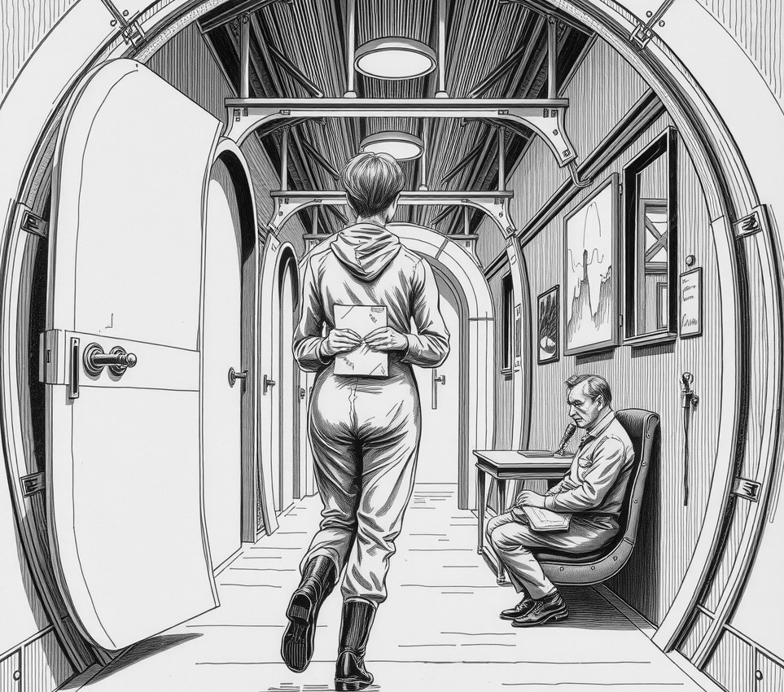

Kestrel Hollow Ring . 10 September 2393

Agnieszka Umarov lost the Passive-Aggressive Memo Marathon on Saturday after her note, hand-carried through four airlocks, arrived eleven metres away eight seconds ahead of her own 'per my last message'. The last message had been sent by feed. It was the only one that counted.
Forty-one residents entered. Each carried a sealed note to a colleague seated at the far end of Spoke Nine, and each note had to open with the words 'per my last message'. The winner was whoever's reminder landed before the thing it reminded about.
Umarov led through the second airlock. She cycled the third in record time, then stopped to fix her hair. Haruto Yamaguchi, running a note about a shared kettle, passed her on the cycle step and did not look back.
The turn came at the line. Judges found Yamaguchi's reminder had been sent before he left the start. His note was never delivered. It was still in his pocket when he was named champion.
Amaru Bakshi, the recipient, said he had not read either message.
In the mixed zone, Umarov was asked whether she would carry the note again next year.
"The note was about the kettle," she said. "It is still not clean."